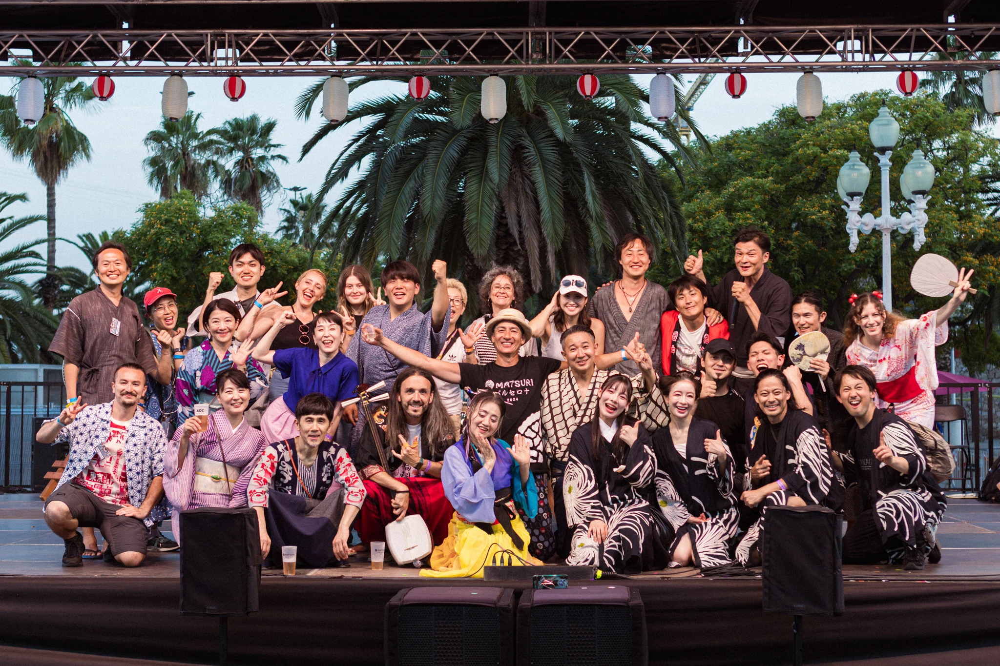

The Matsuri Japanese Culture Association (マツリ日本文化協会) is a non-profit organization with over 13 years of experience in Barcelona. Since our inception in 2013, we have worked to bring Japanese culture to the public in an open and accessible way, growing from a first edition with 1,500 attendees to a well-established festival that brought together more than 40,000 people in 2024.
This growth has been possible thanks to the commitment of our team, the involvement of the community, and a diverse cultural program. In 2019, this work was officially recognized when the association's president received the Distinction from the Consul General of Japan in Barcelona for his contribution to cultural dissemination. Our greatest asset is our people. We have more than 130 volunteers from up to 20 different backgrounds, which allows us to work from an intercultural and inclusive perspective, deeply connected to the cultural fabric of Barcelona.

The Matsuri Japanese Culture Association (マツリ日本文化協会) is a non-profit organization with over 13 years of experience in Barcelona. Since we started in 2013, we have worked to bring Japanese culture closer to the public in an open and accessible way, growing from 1,500 attendees at the first edition to a well-established festival that attracted over 40,000 visitors in 2024.
Matsuri will be open from 11am to 8pm, and the event will close at 9pm on both days.
Yes, Matsuri is a non-profit event created mostly by volunteers. Your contribution is very important for Matsuri to happen. You can buy your ticket at entradium.com
There are discounts for early bird purchases!
Admission is free for those born on or after January 1, 2014, and for people with disabilities and one companion. An official disability certificate can be requested (an official resolution will be accepted even with a disability rating below 33%).
No, due to safety and capacity regulations, leaving and re-entering are not permitted. We recommend you come and spend the day, as there are all sorts of activities you'll love, as well as a food court.
Access with scooters, bicycles or other vehicles is not allowed.
According to Barcelona's Municipal Ordinance, bringing food and drinks from outside (including cans and glass) is prohibited.
Exception: only WATER is permitted (to prevent heatstroke).
(Sustainability: We recommend using reusable bottles to reduce plastic waste.)
Yes, dogs are part of the family too, but they must be kept on a leash, and please help us keep the grounds clean by picking up after them. Please be aware that there are many people and noises at Matsuri that might frighten them.
Some workshops require prior registration. We'll help you at the Information stand located at the entrance.
Yes, there are options for everyone.
Please fill out this form and we will contact you as soon as possible here
...
...
Please fill out this form and we will contact you as soon as possible here
Matsuri has a special area for children, where they can enjoy activities adapted to their age, but they must always be accompanied by an adult.